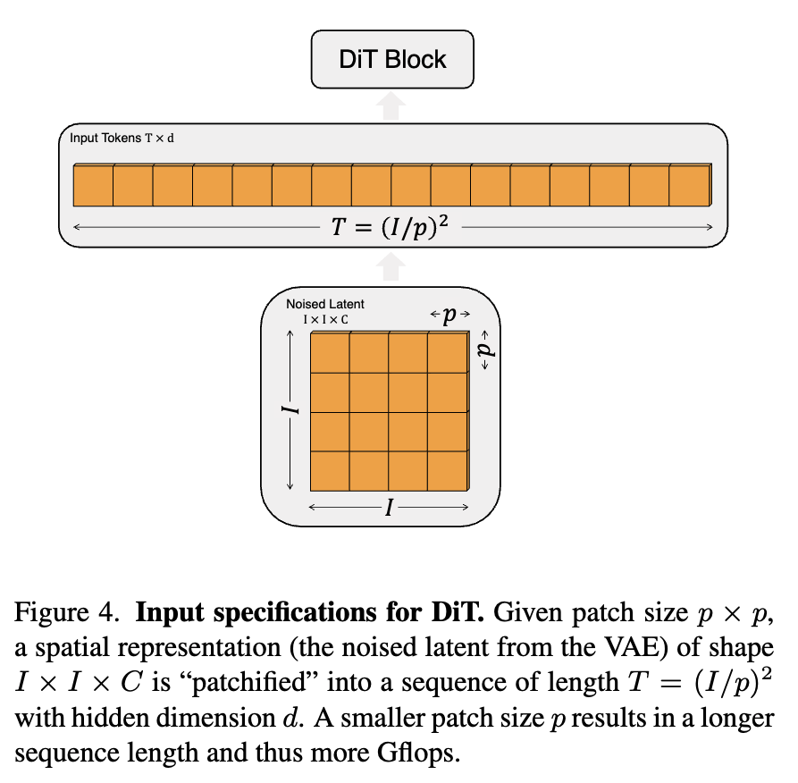
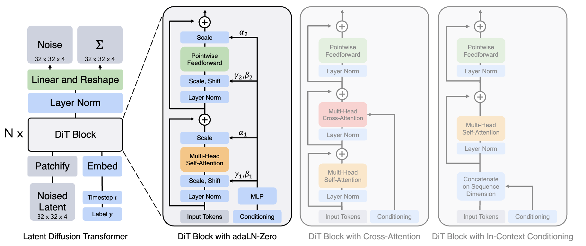

Diffusion Transformer (DiT)
To understand the math behind the Diffusion Transformer (DiT), we have to separate it into two distinct parts: the mathematical framework (the objective function defining how noise transitions to data) and the neural architecture (how the tensor operations actually process the space and time variables).
Here is the rigorous breakdown of how DiTs operate, specifically framed around the continuous-time formulations (like Flow Matching) that are standard in modern implementations.
1. The Mathematical Objective: Flow Matching & Diffusion
The DiT does not change the fundamental math of generative modeling; it simply acts as the function approximator.
Let \(x \in \mathbb{R}^{C \times H \times W}\) be a clean image from the data distribution \(p_{data}\), and \(\epsilon \sim \mathcal{N}(0, I)\) be pure noise from the prior distribution \(p_{prior}\).
In a standard linear Flow Matching schedule, the intermediate state \(z_t\) at time \(t \in [0,1]\) is defined as:
\[z_t = (1-t)x + t\epsilon\]
*(Note: In traditional diffusion, this is parameterized via *\(\sqrt{\bar{\alpha}_t}\)* and *\(\sqrt{1-\bar{\alpha}_t}\)*, but the core principle is identical).*
The velocity vector field that points from the noise to the data is the derivative of the path:
\[v = \frac{d z_t}{d t} = \epsilon - x\]
The goal of the DiT, denoted as \(v_\theta(z_t, t, c)\), is to predict this velocity (or alternatively, to predict the noise \(\epsilon\) or the clean image \(x_0\)), conditioned on the timestep \(t\) and any global condition \(c\). The network minimizes the Mean Squared Error:
\[\mathcal{L} = \mathbb{E}_{t, x, \epsilon} \left[ \| v_\theta(z_t, t, c) - (\epsilon - x) \|^2 \right]\]

2. The DiT Architecture: Patchification
Unlike a UNet, which maintains 2D spatial feature maps and uses convolutions, the DiT flattens the image into a 1D sequence of tokens.
Given a noisy image \(z_t \in \mathbb{R}^{C \times H \times W}\) and a patch size \(p\), the image is sliced into \(N\) patches, where \(N = \frac{H}{p} \times \frac{W}{p}\).
Each patch is linearly projected into a hidden dimension \(D\). The resulting sequence \(Z \in \mathbb{R}^{N \times D}\) represents the spatial information.
To retain spatial awareness (since self-attention is permutation-invariant), 2D sinusoidal positional embeddings \(P_{pos} \in \mathbb{R}^{N \times D}\) are added:
\[X_0 = Z + P_{pos}\]

3. The Core Innovation: AdaLN-Zero Math
The secret to the DiT's success is how it injects the temporal and conditional information (\(t\) and \(c\)). Standard transformers use Layer Normalization (LN). DiTs replace this with Adaptive Layer Normalization (AdaLN).
First, the timestep \(t\) and condition \(c\) are embedded and passed through a multi-layer perceptron (MLP) to generate six modulation parameters per transformer block:
\[(\gamma_1, \beta_1, \alpha_1, \gamma_2, \beta_2, \alpha_2) = \text{MLP}( \text{Embed}(t) + \text{Embed}(c) )\]
These parameters scale and shift the normalized tokens.
For the \(l\)-th DiT block, the mathematical update rule is:
\[h = X_l + \alpha_1 \odot \text{MSA} \Big( \gamma_1 \odot \text{LayerNorm}(X_l) + \beta_1 \Big)\]
\[X_{l+1} = h + \alpha_2 \odot \text{FFN} \Big( \gamma_2 \odot \text{LayerNorm}(h) + \beta_2 \Big)\]
Where \(\text{MSA}\) is Multi-Head Self-Attention and \(\text{FFN}\) is the Feed-Forward Network.
The "Zero" in AdaLN-Zero:
At initialization, the final linear layer of the modulation MLP is initialized to exactly zero. Therefore, at step 0 of training:
\[\gamma_i = \mathbf{1}, \quad \beta_i = \mathbf{0}, \quad \alpha_i = \mathbf{0}\]
This means the block behaves exactly as an identity mapping: \(X_{l+1} = X_l\). This allows the network to start training with perfect gradient flow, identically to the unconditioned transformer, preventing early-stage numerical collapse.
4. Output Unpatchification
After \(L\) layers, the final sequence \(X_L \in \mathbb{R}^{N \times D}\) is passed through a standard linear layer (also zero-initialized) to expand the hidden dimension back to the pixel space of the patch (\(p \times p \times C\)).
\[Y = \text{Linear}(X_L) \quad \text{where } Y \in \mathbb{R}^{N \times (p^2 C)}\]
This 1D sequence is simply reshaped back into the 2D spatial grid \((C \times H \times W)\), representing the predicted velocity \(v\), noise \(\epsilon\), or expected clean image \(x_0\).
The inherent challenge with DiTs arises when handling dense, spatially-varying conditions—like inverse problem estimates or physical measurements. Because AdaLN applies a global \(\gamma\) and \(\beta\) across *all* spatial tokens simultaneously, it excels at global concepts (like "make this a picture of a dog") but struggles natively with local pixel-to-pixel mapping constraints without external architectural modifications.
Why Adaptive Layer
To understand how a Transformer mathematically shifts its focus using Adaptive Layer Normalization (adaLN), we have to look at what \(\gamma\) (scale) and \(\beta\) (shift) actually are.
They are not single numbers applied to the whole image; they are vectors applied to the feature channels of every single token.
1. Understanding the Feature Dimension (\(D\))
In a Transformer, every patch of an image (a token) is represented by a vector of size \(D\) (the hidden dimension, e.g., \(D = 1024\)).
Through training, each of these 1024 channels learns to look for a specific visual concept:
- Channel 12 might activate strongly when it sees a sharp vertical edge (high frequency).
- Channel 450 might activate when it detects a broad gradient of the color blue (low frequency).
- Channel 899 might track the presence of a "fur-like" texture.
2. The Condition Embedding
When you pass a timestep \(t\) (e.g., \(t=1000\) for pure noise) and a class label \(c\) (e.g., "Cat") into the network, they are first converted into mathematical vectors (embeddings) and combined. Let's call this combined condition vector \(w\).
This vector \(w\) contains the explicit instruction: *"We are at step 1000, and we are trying to build a Cat."*
3. The MLP "Mixing Board"
In standard LayerNorm, \(\gamma\) and \(\beta\) are static vectors of size \(D\). In adaLN, the condition vector \(w\) is fed into a small, fully connected neural network (an MLP) located inside every Transformer block.
This MLP acts like an automated sound engineer at a mixing board. It outputs the \(\gamma\) and \(\beta\) vectors dynamically for that specific timestep:
\[\gamma = \text{MLP}_\gamma(w) \in \mathbb{R}^D\]
\[\beta = \text{MLP}_\beta(w) \in \mathbb{R}^D\]
4. The Modulation (Element-wise Multiplication)
Here is where the actual "shifting of focus" happens. The normalized token data, \(\text{LayerNorm}(x)\), is multiplied by \(\gamma\) element-wise (denoted by \(\odot\)), and then \(\beta\) is added.
\[y = \gamma \odot \text{LayerNorm}(x) + \beta\]
Because this is element-wise, the MLP has granular control over every single one of the 1024 feature channels.
The Mechanism in Action (Timestep \(t=1000\) vs \(t=1\))
Let's look at how the MLP modulates the network based on the timestep.
At \(t=1000\) (High Noise):
The image is almost entirely static. Looking for sharp edges is mathematically useless because the noise is made of random, sharp, high-frequency spikes.
- The MLP sees \(t=1000\) and outputs a \(\gamma\) vector where the value for Channel 12 (Edges) is pushed close to \(0.0\). This effectively silences the network's edge detectors.
- Simultaneously, the MLP outputs a high value for Channel 450 (Broad Blue Gradients). This forces the network to ignore the static and focus only on establishing the rough layout of the sky in the background.
At \(t=1\) (Low Noise):
The image is mostly formed. The broad shapes are already in place, and the network needs to refine the final pixels.
- The MLP sees \(t=1\) and dramatically changes the \(\gamma\) vector.
- It lowers the \(\gamma\) value for Channel 450 (the broad shapes are done, no need to focus on them).
- It cranks up the \(\gamma\) value for Channel 12 (Edges) and Channel 899 (Fur Texture) to \(2.5\). The network suddenly becomes hyper-sensitive to fine details, allowing the attention mechanism to sharply define the cat's whiskers.